计算预测。不是动物敲除后的差异表达，也不是慢性三叉神经痛或给药 4 小时镇痛的验证。算法：Osorio 等，Patterns 2022，scTenifoldKnk。
在小鼠三叉神经节的感觉神经元亚群中，把 Cplx2 的调控出边置零之后，哪些基因被预测为扰动。显著线为 FDR < 0.05。
| 登录号 | 文献 | 本次用法 |
|---|---|---|
| GSE197289 | Yang 等，Neuron 2022。小鼠三叉神经节单核数据，含对照与两种头痛模型。 | 只用对照。过门槛的亚群做虚拟敲除。 |
| GSE131272 | Nguyen 等，eLife 2019。眶下神经切断后的三叉神经节。 | 已下载。没有作者亚群标签，未按亚群敲除。 |
| GSE322600 | 小鼠 Sp5C，CION 对假手术。 | 51 个细胞，低于 300，未敲除。 |
没有「小鼠 × 三叉神经节 × 慢性眶下神经缩窄 × 单细胞」的公开数据。
| 内容 | 标准 | 来源 |
|---|---|---|
| 亚群能否敲 | 检出率 ≥ 10%，检出细胞 ≥ 25，细胞数 ≥ 300 | 课题预先写明 |
| 显著基因 | FDR < 0.05；被敲基因自身不算新靶点 | 论文各例 |
| 富集 | 全基因按扰动距离排序后做 GSEA | 论文方法 |
| 网络的点 | 仅显著基因 | 论文自我中心图图注 |
| 网络的边 | 展示互作时用 STRING，综合分 ≥ 0.9 | 论文用 STRING；分数用网药规定 |
| 正式参数 | 10 张网络，每次 500 细胞，文库大小 ≥ 1000，张量秩 3 | 软件默认 |
下图来自试跑：3 张网络、每次 200 个细胞、最多 1000 个基因、文库大小 500。低于默认，不能当作正式参数结果。固定 40 个点的同心圆网络不符合论文的显著基因规则，不作为本报告的网络结果。
过门槛并进入敲除的是 cLTMR、NF1、NP、PEP、TRPM8。
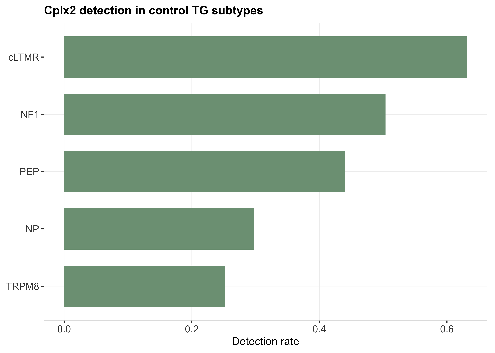
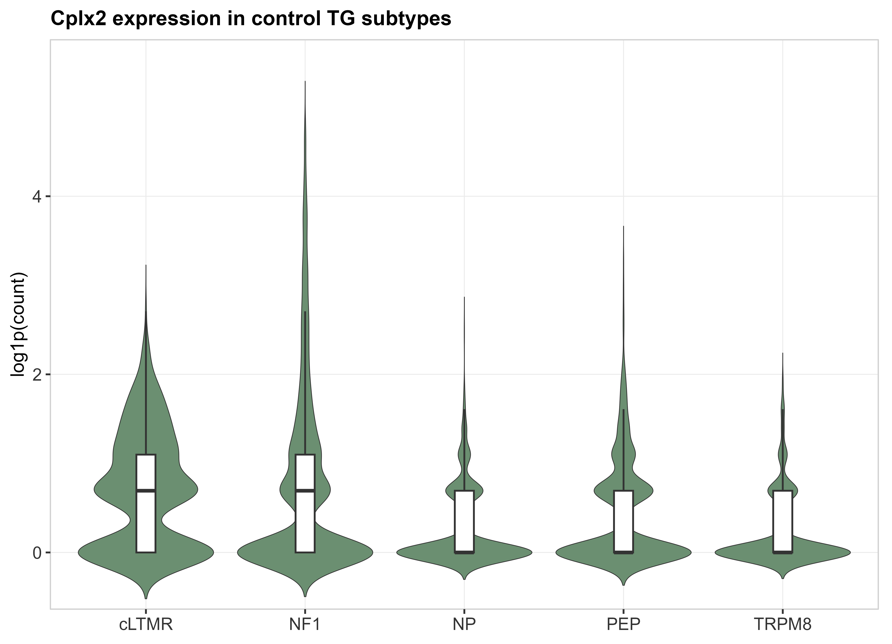
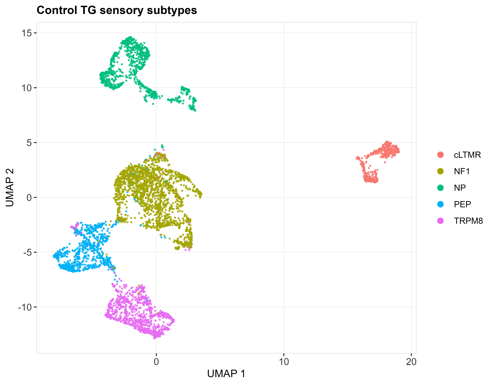
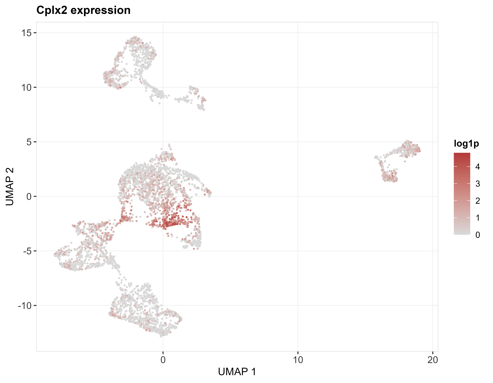
每个亚群单独建网，把 Cplx2 出边置零，再与原网络做流形对齐。五个亚群中，除 Cplx2 自身外，只有 PEP 的 Scarb2 达到 FDR < 0.05。
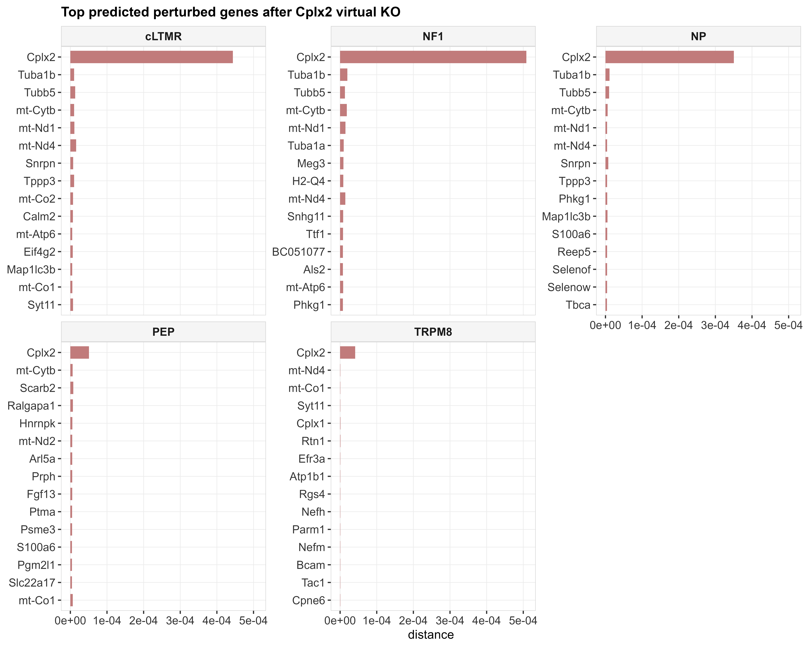
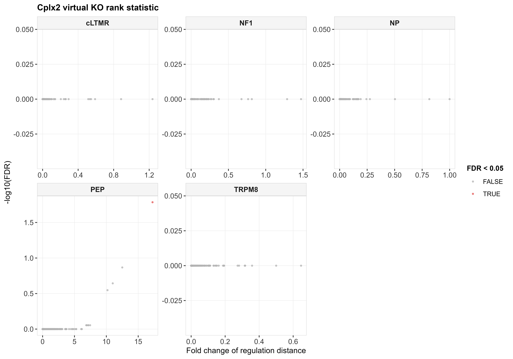
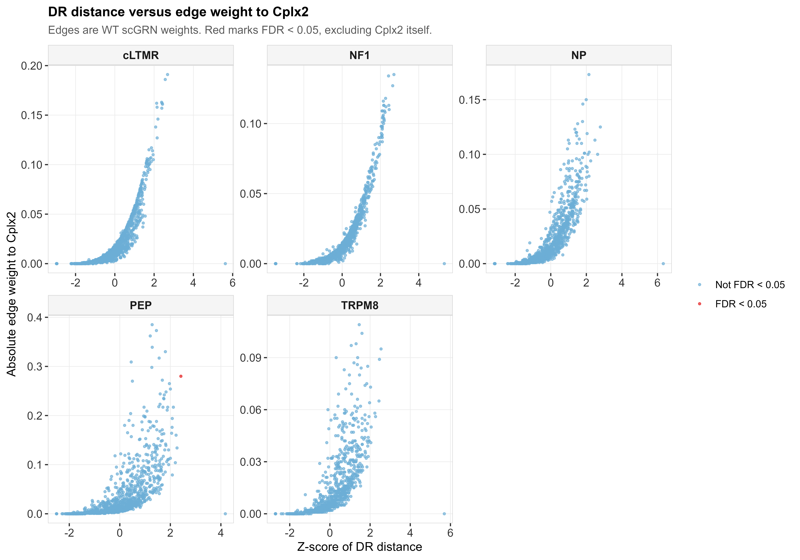
上图对应论文 Figure 5。横轴是扰动距离的 Z 分数，纵轴是该基因连到 Cplx2 的调控边权绝对值。红色为 FDR < 0.05。
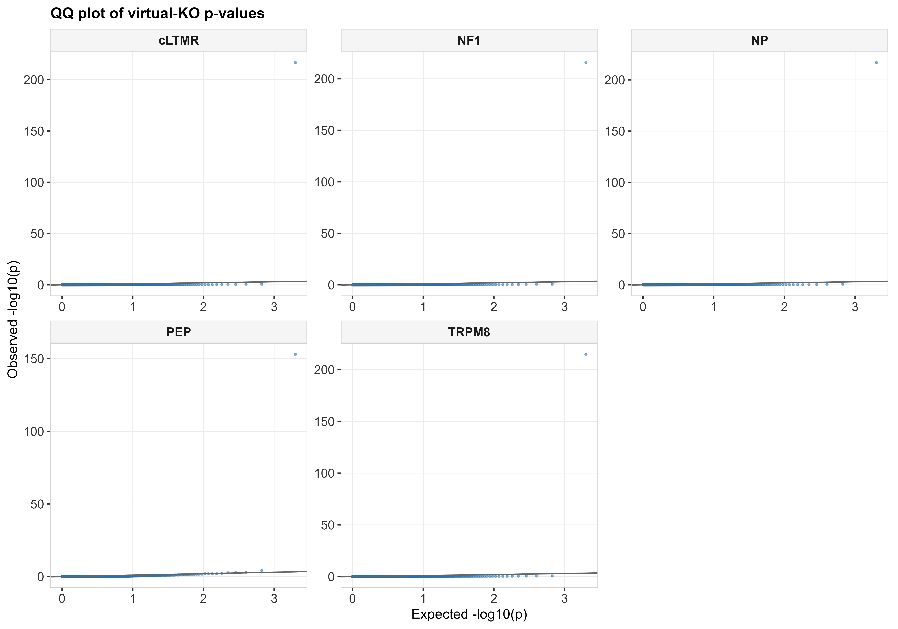
对递质分泌（GO:0007269）和突触囊泡循环（GO:0099504）做 GSEA。五个亚群的校正后 P 值都大于 0.5，不能称为显著富集。图中数字是校正后 P 值。
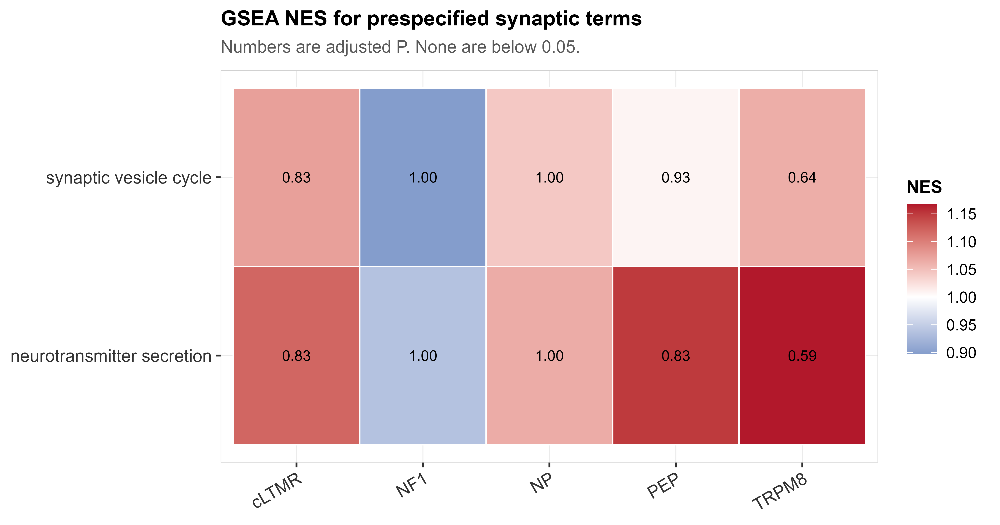
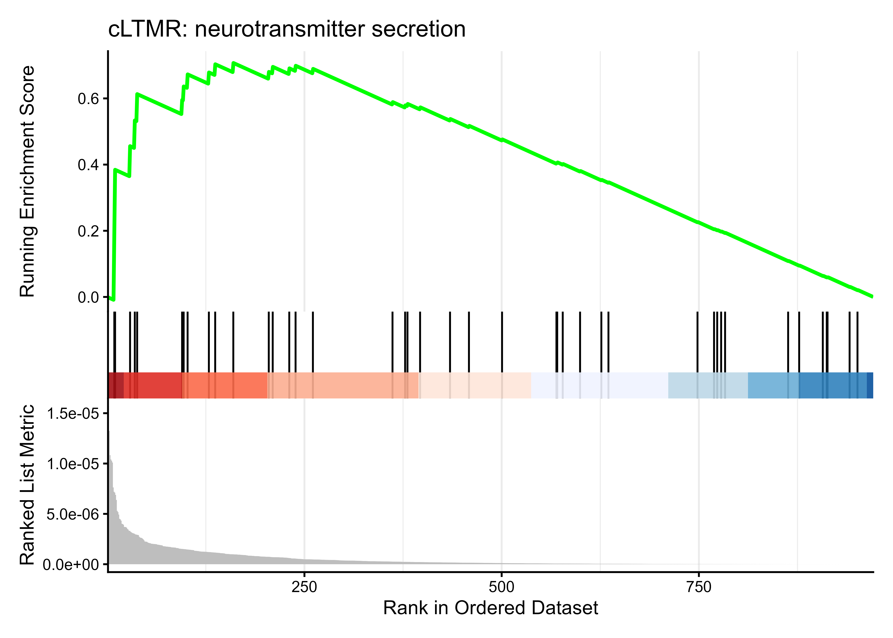
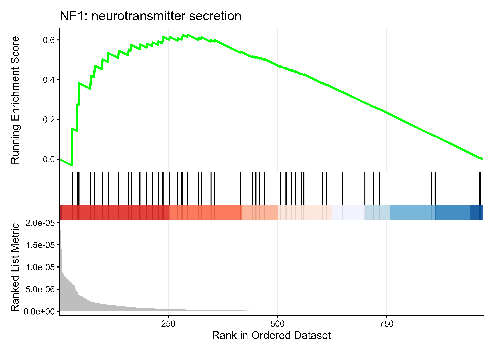
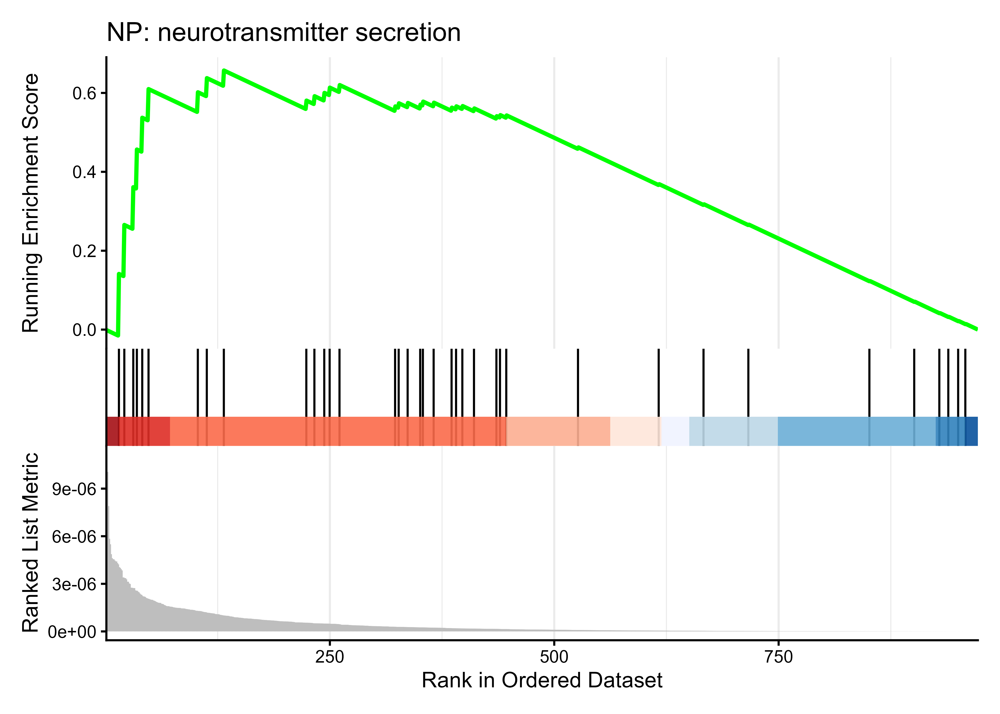
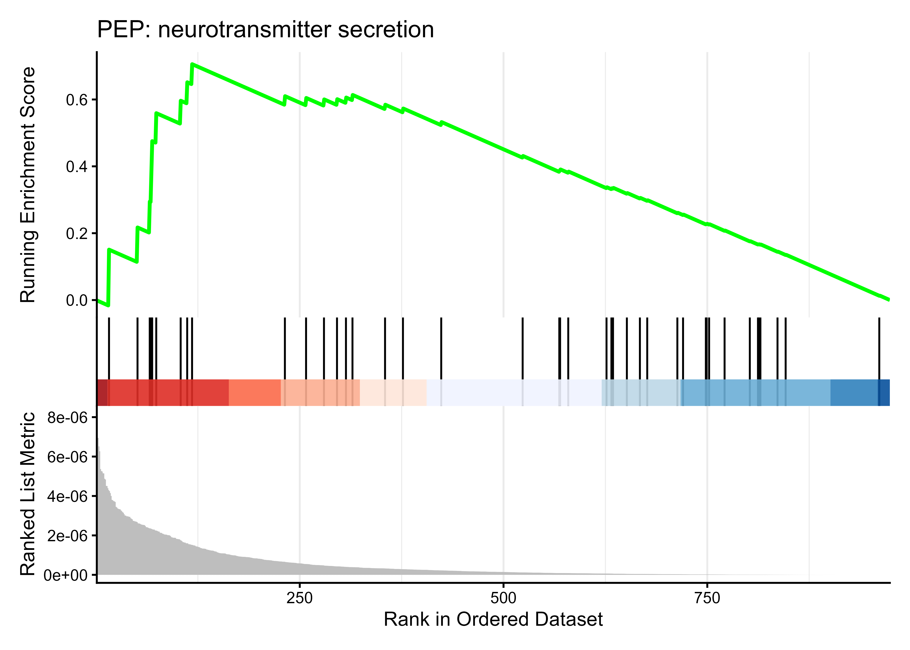
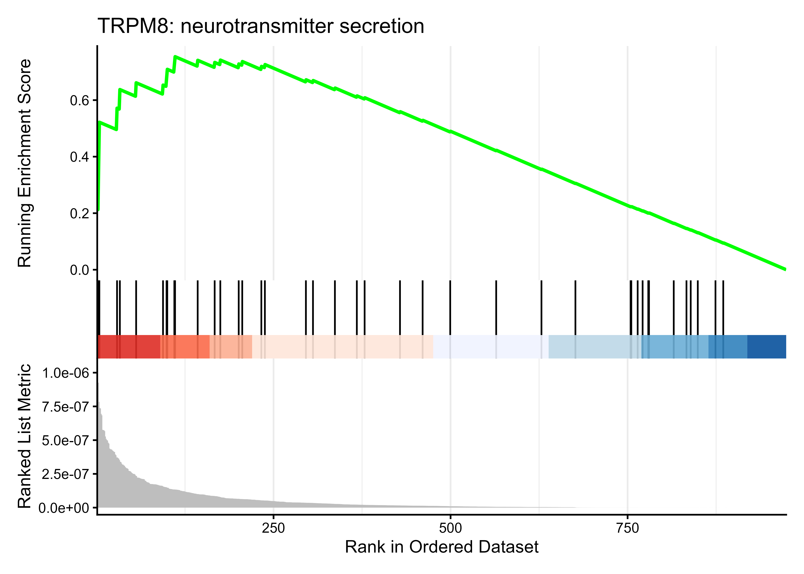
论文的自我中心网络只连接 FDR < 0.05 的基因。因此四群没有可连接的其他基因。PEP 只有 Scarb2，调控边权约 0.28。STRING 在综合分 0.4 和 0.9 下都没有这条边，所以没有 STRING 网络。这与论文「点必须显著、边用 STRING」一致，也因此画不出论文里那种多节点星形图。
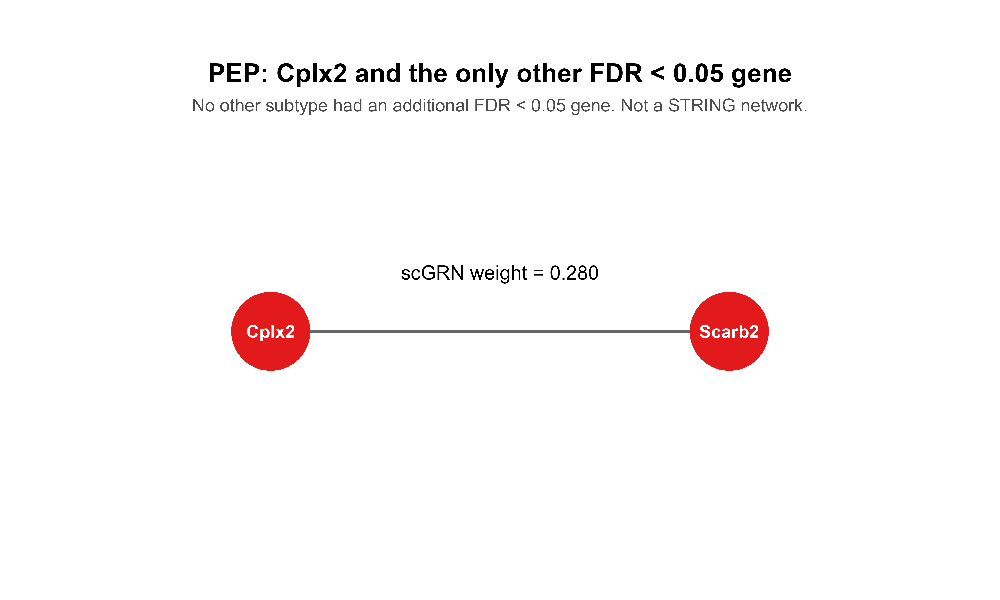
| 本次 | |
|---|---|
| 图 1 建网、置零、对齐 | 步骤相同。未粘贴论文原图。 |
| 图 2 模拟 | 未做。不是本课题数据。 |
| 图 3–4 富集曲线与显著基因网络 | 曲线已做，且不显著。网络只保留 PEP 的显著基因。 |
| 图 5 距离–边权 | 已做。 |
| 图 6 全基因系统敲除与 STRING 子网 | 未做系统敲除。STRING 无边。 |
| 40 节点同心圆 | 不符合论文的显著基因规则，不作为结果。 |
脚本在上一级 代码文件/。正式复现应使用软件默认：10 张网络、每次 500 个细胞、文库大小至少 1000。